貼り付けるだけの頼み文つき
こんにちは、おけもんです😊 記事のサムネ7案と、本文に入れる図4枚を、ChatGPTの画面を一度もさわらずに作りました。Claude Codeがブラウザを開いて、ChatGPTに頼んで、できた絵を保存して、見比べるところまでやってくれます。下の頼み文を、あなたのClaude Codeに貼ってみてください。
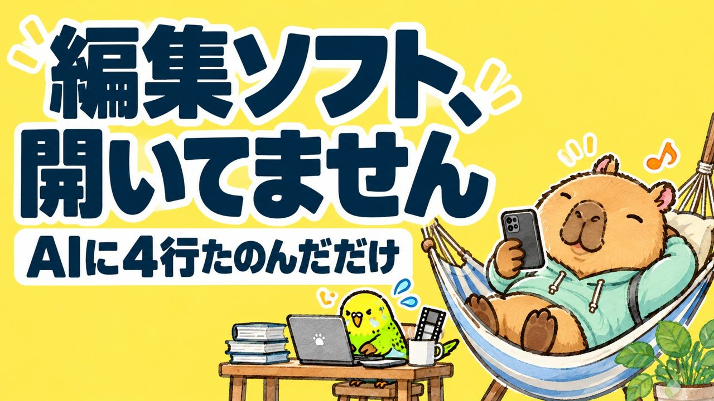
あなたがやるのは、最初の1回の頼みだけです。あとの3つは、AIどうしで進みます。
作りたい物と、入れたい文字を書いて、Claude Codeに渡します。
お手本の画像を添えて、依頼文を打って、送信ボタンを押します。
1回の頼みで3〜4枚。待つのは2〜3分です。
字の間違いを1枚ずつ確かめて、小さく縮めた比較表まで作ります。
私は、Claudeのデスクトップアプリの「Code」タブに付いているブラウザを使いました。ChromeにClaudeの拡張を入れている方は、そちらでも同じ頼み方ができます。
そのブラウザで chatgpt.com を開いて、ご自身でログインしておきます。ログインだけは人の仕事です。
いつものキャラや、前に作ったサムネを1枚。これを添えると、絵柄がそろいます。無くても作れます。
黄色い【 】の中だけ、ご自身の内容に書き換えてください。下半分の「進め方」は、私が実際につまずいた所をそのまま書いた物です。消さずに一緒に貼ると、Claude Codeが同じ所で転びにくくなります。
ブラウザを操作できる道具（内部ブラウザ。無ければ Claude in Chrome）で、ChatGPT に画像を作ってもらってください。 ■ 作りたい物 【例：ブログ記事「◯◯」のサムネイル。横長16:9】 ■ 入れる文字（このとおりに。これ以外の文字は入れない） 【例：1行目（小さめ）「編集できなくても」／2行目（特大）「YouTubeデビュー」】 ■ 絵の中身と雰囲気 【例：明るい朝の公園。うちの看板キャラの猫が、スマホを持って歩いている】 ■ お手本にする画像（このパソコンの中の場所。無ければ「なし」） 【例：~/Pictures/icon.png】 ■ 枚数と違い 【例：読む人に刺さる角度を変えて3枚】 ■ 保存する場所 【例：~/Desktop/chatgpt-images/】 進め方（つまずきやすい所なので、この順でお願いします） 1. ブラウザで https://chatgpt.com を開く。ログイン画面が出たら、そこで止まって私に教える。ログインは私がやります。パスワードは入力しないでください。 2. お手本の画像がある時は、長い辺を1000pxくらいに縮めてから添付する。ページにある画像用のファイル入力（input[type=file]）へ、JavaScript で File を作って入れ、change イベントを出す。「（ファイル名）を削除する」というボタンが出たら、添付できています。画像のデータをページへ運ぶ時は、手元に一時的なページを立てて window.name に載せ、同じタブで ChatGPT へ移動すると運べます。終わったら一時ページは止めてください。 3. 依頼文は、入力欄をクリックしてから、文字として打つ。Enter は送信になるので改行は入れず、段落は空白でつなぐ。複数枚ほしい時は「ChatGPTの画像生成で、THREE separate, independent images（3枚の別々の画像）を作ってください」のように、枚数を英語でも書く。文字は「下に指定した日本語だけを正確に書き、ほかの文字や実在のロゴは入れない」と添える。 4. 送る前に、入力欄の文字数と、先頭・末尾の言葉を読んで、1回ぶんだけ入っているのを確かめる。それから送信ボタンを押す。 5. 絵ができるまで2〜3分かかります。長く待つ命令を1回出すのではなく、10秒くらいの待ちを何回かに分けて、絵が出たかを確かめる。 6. できた絵は、ページの中の大きい画像（幅1000px以上）を canvas に描いて JPEG にし、base64 で受け取って、保存する場所へファイルとして置く。同じ絵を二重に拾っていないか、ファイルの中身（ハッシュ）で確かめる。 7. 保存した絵を自分で開いて見て、入れた文字が指定どおりかを1枚ずつ確かめる。違っていたら、同じ会話で「◯枚目の『…』を『…』に直して」と頼み直す。 8. サムネイルの時は、全部の案を幅140pxに縮めて横に並べた比較画像も1枚作る。いちばん大きい字が読めるかを見るためです。 9. 最後に、保存した場所と、それぞれの絵が何の案かを、一覧で教えてください。
うまく動かなかった時は、Claude Codeに「このページを読んで、同じやり方でやって」と、このページのURLごと渡してみてください。
ChatGPTへ送ったのは3回です。サムネ3枚、角度を変えたサムネ4枚、本文の図4枚。合わせて11枚で、字の間違いは1つもありませんでした。
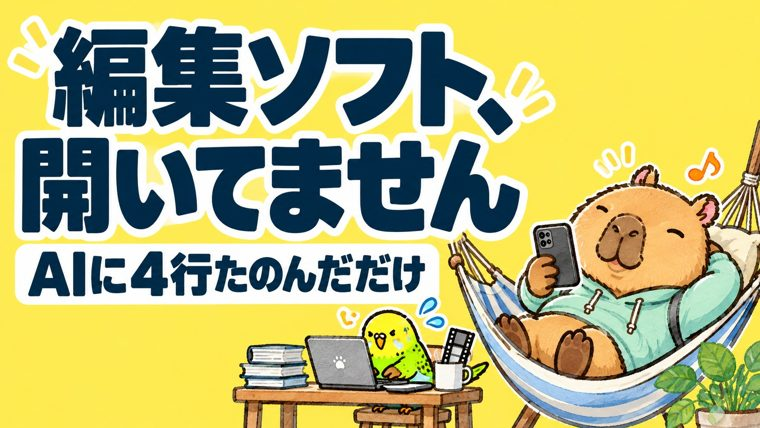
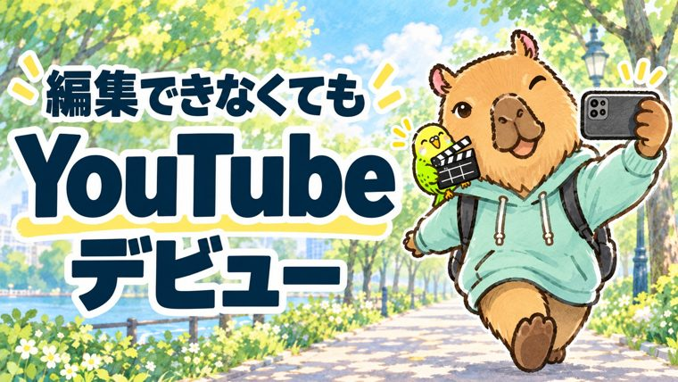
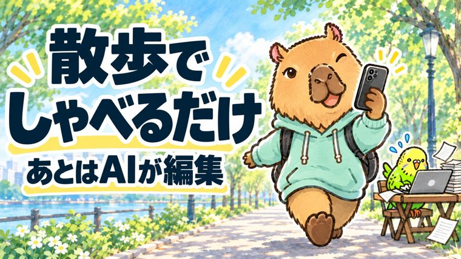
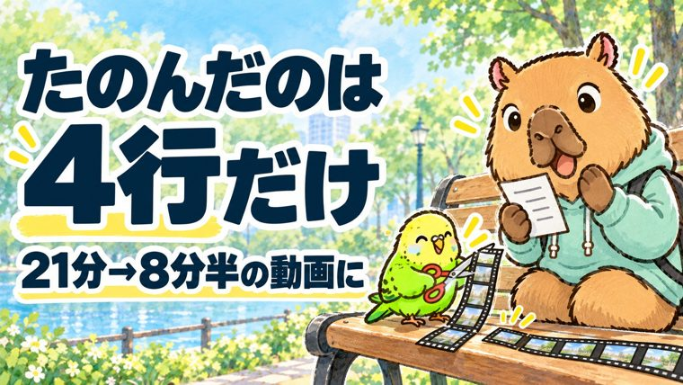
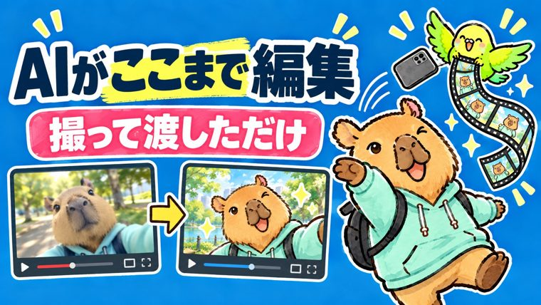
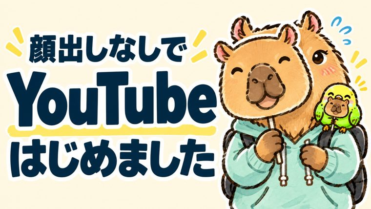
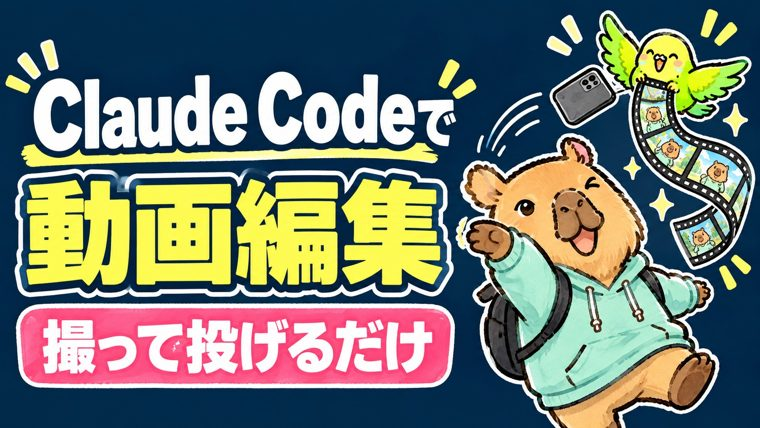
本文に入れる図も、同じ会話の続きで頼みました。同じカピバラとインコが、別の場面で動いてくれます。
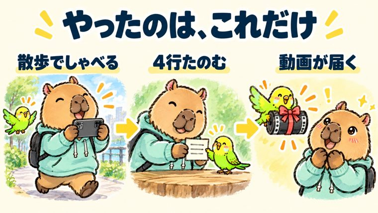
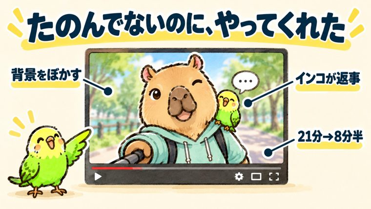
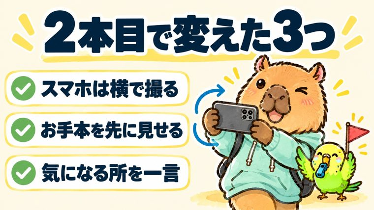
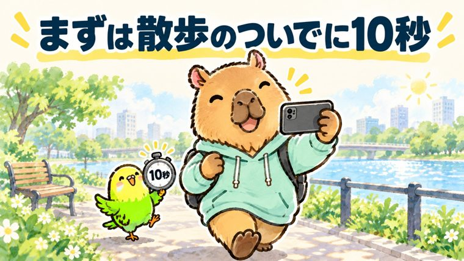
私が言ったのは「5パターンぐらい出して、どれがいいかあなたたちで話し合って決めて」「お手本を見てきて」の2つです。そのあとAIがやった事が、絵を作る事より面白かったので置いておきます。
記事を載せる場所で、同じテーマの人気記事のサムネを12枚開いて、どんな言葉と色に反応が集まっているかを読んでから、追加の4案を頼んでいました。
サムネは、並んだ時は幅140pxくらいです。7案をその大きさに縮めて並べると、大きい画面では良く見えた案の字が、読めなくなっていました。
経緯も記事の題も知らない別のAIに、縮めた表だけを見せて「どれを押す？」と聞いています。作った本人は、自分の案に甘くなるからだそうです。
実際に使った比較表です。Cは色がいちばん目立ちますが、「Claude Codeという言葉が分からないと、技術者向けに見える」と言われて外れました。Aに決まった理由は、記事の題にまだ無い言葉を足せるからでした。
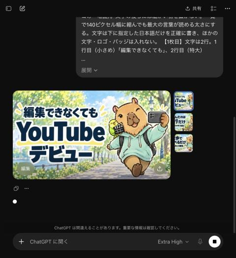